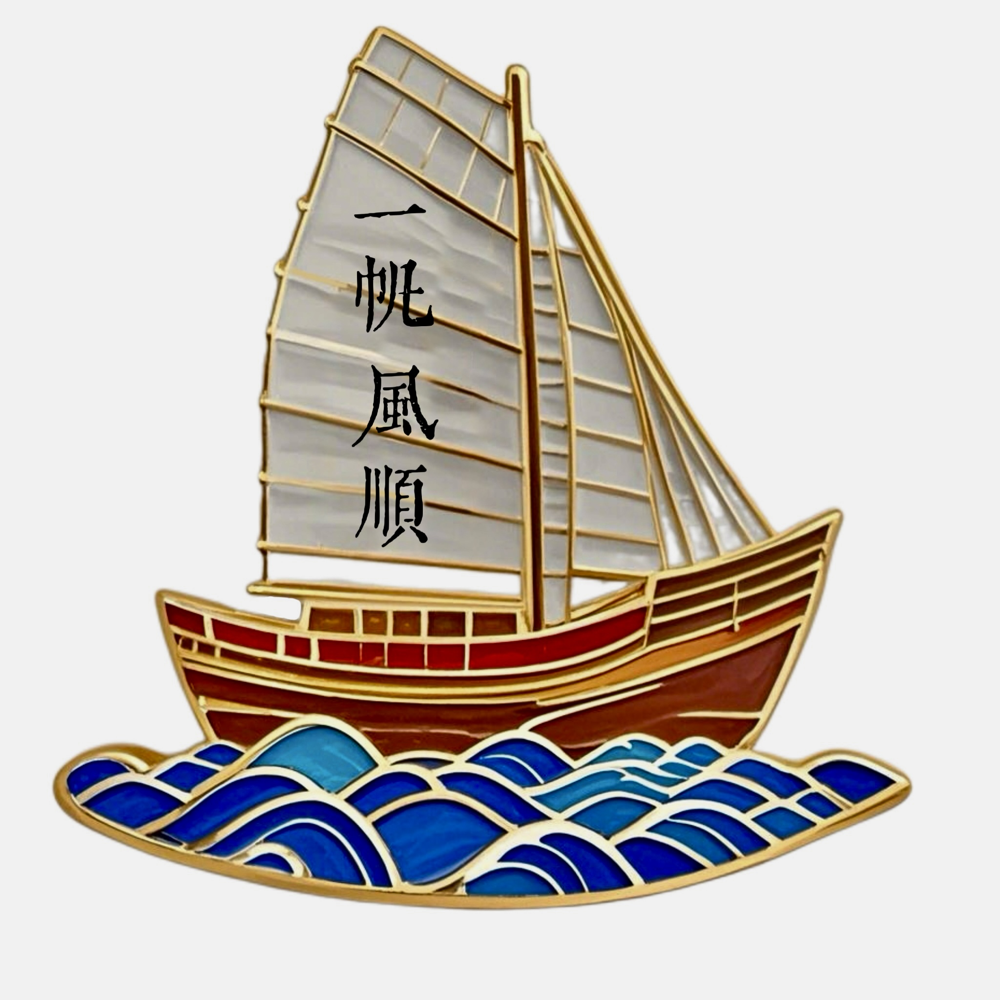
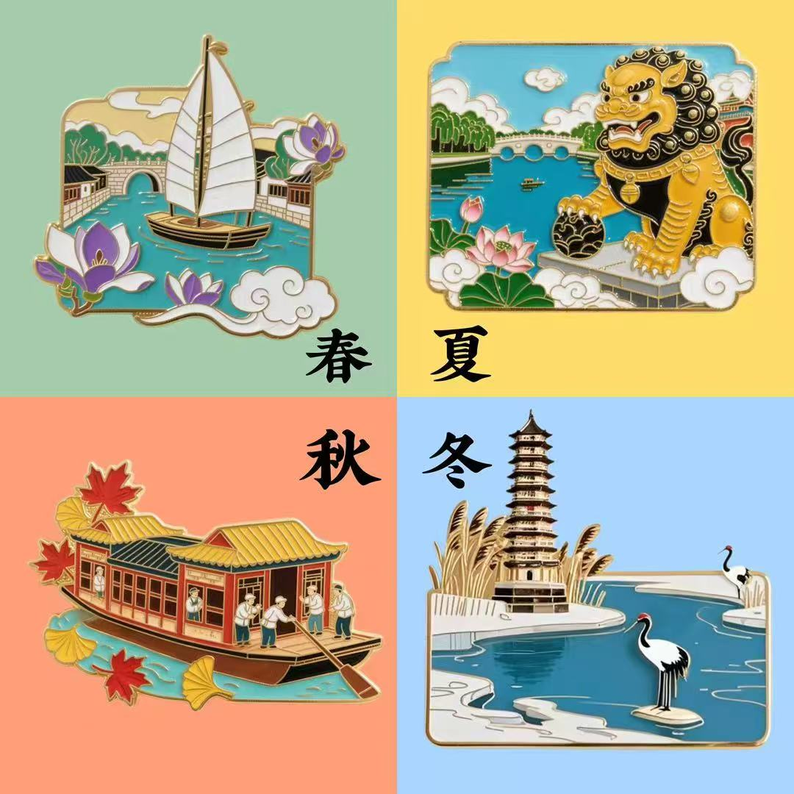
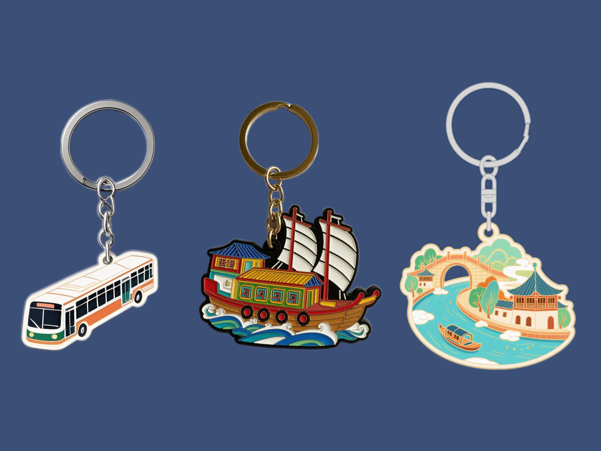
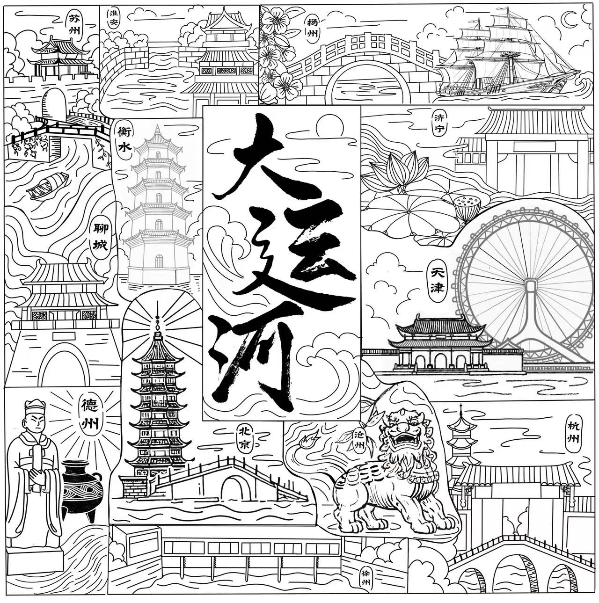
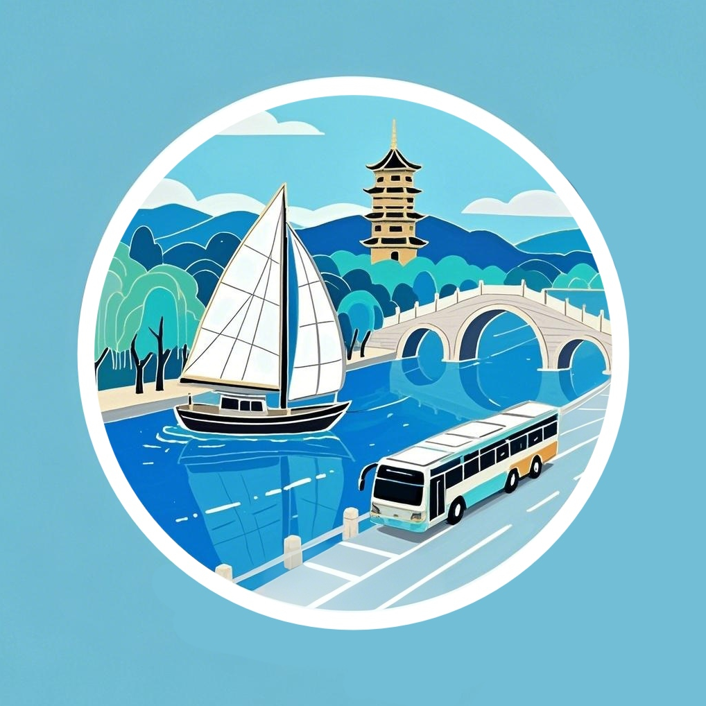

（点击文字跳转→）
1、北京大运河博物馆
2、扬州中国大运河博物馆
3、杭州京杭大运河博物馆
4、聊城中国运河博物馆
5、洛阳隋唐大运河文化博物馆
1、一帆风顺NFC公交卡
定价：48.00元
在悠悠华夏历史长河中，大运河宛如一条蜿蜒巨龙，滋养着沿岸的万千风华，承载了千年的商贸繁华与人文交流。这款NFC公交卡文创，正是从这一伟大历史遗产中汲取灵感。
帆船，作为古代大运河上重要的交通工具，乘风破浪，穿梭南北，见证了沿岸城镇的兴起与昌盛，是勇气与探索精神的象征，寓意着一路“一帆风顺”。它的设计将古老航运元素与现代便捷出行完美融合，既具实用性，又满含文化韵味。
使用者手持这张公交卡，轻触刷卡区，开启便捷通勤的同时，指尖摩挲间仿佛能触碰到大运河往昔的热闹喧嚣。帆船扬帆破浪，不仅是一张公交卡，更是可随身携带的文化符号，时刻提醒人们铭记大运河的辉煌，怀揣对生活顺遂如意的祈愿，向着美好未来全速进发，让古老文化在现代生活中熠熠生辉。
2、四时运河冰箱贴
定价：60.00元
大运河，这条流淌千年的华夏血脉，纵贯南北，连通古今，承载着无数的历史记忆与文化珍宝。我们精心打造的这套大运河文化宣传冰箱贴，以四季为脉络，将运河沿岸的标志性元素凝于方寸之间，开启一场穿越时空的文化之旅。
春临京城，玉兰花绽。在北京通州大运河畔，玉兰花盛开的美景与粼粼波光相互映衬，诉说着城市与运河共生的朝气。它不仅是春日繁花的代表，更象征着大运河流经之处在新时代焕发的蓬勃生命力，开启四季运河故事的序章。
夏日骄阳，镇水兽守。置于运河桥头、岸边的镇水兽威风凛凛。在过去，它们肩负着守护运河安宁、平息水患的重任，是古人敬畏自然、祈愿顺遂的精神寄托。炎炎夏日，镇水兽静卧，见证着河水悠悠流淌，护佑着沿岸民生，也庇荫着代代相传的运河文化根基。
秋风送爽，漕运船行。漕运，乃大运河的“动脉”功能，一艘艘漕运船穿梭于河道，是经济交流的纽带，串起南北城镇，促进文化交融，船桨翻起的水花，激荡着商业繁荣、人文荟萃的历史回音，让运河作为沟通华夏大地生命线的意义具象化。
冬雪皑皑，燃灯塔耀。燃灯塔屹立通州，数百年来为往来船只指引方向。寒冬素裹下，暖黄灯光穿透雪幕，宛如夜空中最温暖的慰藉。它是游子归航的坐标，是运河精神的灯塔，照亮大运河走向未来的漫漫长路。
这一套冰箱贴，不只是装饰，更是可触摸的运河历史，四季更迭、物件变迁，唯一不变的是大运河赋予华夏大地的深沉滋养，邀您将这份文化厚礼贴于生活日常，铭记大运传奇。
3、京运亨通钥匙扣
定价：24.00元
“京运亨通”钥匙扣，将北京交通的历史脉络凝于方寸之间。回望往昔，大运河作为北京漕运的“生命线”，舳舻千里，粮货汇聚，它承载着王朝兴盛的物资输送，滋养着京城的繁华烟火，是古代北京与华夏大地紧密相依的纽带，每一艘漕运船都是历史的渡者，摆渡岁月，镌刻商贸繁荣记忆。
跃至现代，穿梭于京城的公交车成了流动风景线，延续着运输的使命，它们串起胡同与高楼，搭载着市民的生活日常与都市梦想，如同漕运血脉的新生分支，确保城市活力奔涌不歇。
这款钥匙扣兼具实用与情怀。金属质地，坚固耐用，每日伴您解锁家门、开启出行，在指尖摩挲间感受岁月沉淀；挂于包上，亦是醒目装饰。“京运亨通”四字，既祈愿个人出行顺遂，一路畅达，又寓意北京交通运输业如古运河水源远流长，未来在科技赋能下，向着智能、高效、绿色新航道破浪前行，永绽光芒。
4、主题印章
· 杭州
底部的拱宸桥，作为京杭大运河终点的标志之一，横跨运河，是南北往来船只的必经之地，见证了运河漕运的兴盛，促进了沿岸商贸文化交流；中部富义仓，清代杭州重要官仓，依托大运河漕运功能，承担粮食存储与转运，是运河沿岸经济活动的重要节点；左上方为香积寺石塔，曾为运河上往来船只祈福平安，是运河宗教文化与民间信仰的象征，承载着沿岸百姓的精神寄托。三者汇聚于印章，展现出独属于大运河杭州段的历史脉络与文化风貌。
· 徐州
这枚印章中展示的韩庄水闸是大运河徐州段的重要水利枢纽。其是南四湖泄洪及南水北调东线关键工程，兼具防汛、调水、航运调控等功能，精准掌控水位，保障运河航运畅通，既守护流域安全，又促进南北物资流转，尽显古代水利智慧与现代运河文化的交融之美。
· 苏州
这枚印章中的主体部分为水陆城门，其是苏州古城的独特符号。它陆路通达、水路通畅，曾是大运河漕运的关键枢纽，见证船只穿梭、商贸鼎盛之景，既守护古城安宁，又助力物资流转，完美融合苏州水城特色与运河文化，尽显千年古韵。
· 聊城
这枚印章所绘为聊城临清鳌头矶，地处元明运河交汇处，因状如鳌首得名。它始建于明代，曾见证运河漕运“粮艘麋集，帆樯如林”的繁华，是运河文化的生动注脚，现为全国重点文物保护单位，承载着聊城独特的历史记忆与运河风情。
· 衡水
这枚印章中的景州塔，屹立于衡水景县，原名“释迦文舍利宝塔”，始建于北魏，古朴雄浑。它曾化身运河“航标”，为往来船只指引方向，悠悠岁月里，见证漕运繁忙。塔身层层叠韵，镌刻历史沧桑，是衡水运河文化的独特坐标，古韵今风，尽纳其间。
· 淮安
印章主体为淮安清江大闸，始建于明代，作为漕运枢纽的核心水利设施，精准调节水位，护航船只穿梭，尽显古人治水之智。一旁的清江浦楼，古朴庄重，曾是运河沿岸地标，见证漕运鼎盛与时代更迭。二者交相辉映，勾勒出淮安独特的运河文化脉络，承载往昔繁华，诉说着大运河的千年故事，成为淮安站点熠熠生辉的历史注脚。
· 扬州
印章左边为扬州二十四桥，其横跨运河支流，古制雅韵，曾是文人荟萃之地，尽显江南温婉诗意。旁边的帆船，象征扬州依托大运河的漕运盛景，古时帆影绰绰，船只往来如织，商贸繁荣。二者交融，既展扬州“桥乡”之柔，又现运河航运之盛，勾勒出扬州独特的运河文化魅力，承载千年历史底蕴与风华。
· 济宁
这枚印章中的康熙南巡行宫遗址，门楣所书“河都枢要”，鲜明凸显了济宁在大运河漕运中的关键地位。明清时，济宁乃运河管理中枢，康熙南巡驻跸于此，足见对运河漕运的重视。该遗址是历史的珍贵见证，承载着古代治理运河的智慧，生动展现了济宁作为“运河之都”的昔日风华，让人们得以窥见大运河漕运的辉煌过往，领略其深厚的历史文化底蕴。
· 天津
这枚印章融合天津两大特色元素。天后宫始建于元代，是漕运船工祈福平安的场所，体现运河文化在天津的重要地位。旁边的天津之眼，是世界唯一建在桥上的摩天轮，跨海河而立，为现代天津地标。二者交相辉映，既展天津深厚的运河历史底蕴，又现时代创新风采，在大运河文化中独树一帜，诉说着津门古今交融的独特故事。
· 北京
这枚印章中的燃灯塔，全称“通州访圣教燃灯古佛舍利塔” ，坐落于大运河最北端，是北京通州的标志性建筑。它始建于北周，距今1400余年 ，现存为辽代塔基、清代仿辽建筑。元明清时，它是漕运航标，船只望见此塔，便知通州、北京渐近，承载着大运河千年漕运记忆与历史文化价值。
· 沧州
这枚印章中所绘为沧州石狮子，又称“镇海吼”，是沧州的标志性文化符号。沧州地处大运河重要地段，是大运河流经里程最长的城市。大运河滋养着沧州，使其成为重要的交通与商贸枢纽 。石狮子见证着沧州因运河而兴的历史，承载着当地百姓对运河安澜的祈愿，也彰显着沧州深厚的文化底蕴和独特的运河风情。
· 德州
这枚印章里的苏禄王墓，是德州独特的文化标识。德州位居大运河关键节点，曾是漕运枢纽，商贸繁荣。苏禄王访华归途中在德州病逝并安葬于此，见证了古代中外友好交流。它不仅是历史遗迹，更彰显德州在大运河文化传承与对外交流中的重要意义。
5、免费贴纸
朋友圈转发集赞加tag即可获得精美贴纸一份！
